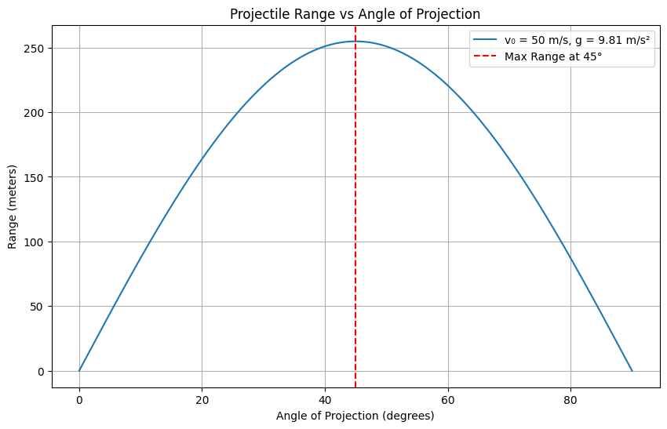

Problem 1
📘 Projectile Motion: Range vs. Angle of Projection 1. 📠Theoretical Foundation Equations of Motion Assuming no air resistance and launch from ground level:
Initial velocity: 𑣠0 v 0 ​
Projection angle: 𜃠θ
Gravitational acceleration: 𝑔 g
Break down the initial velocity:
𑣠0 𑥠= 𑣠0 cos ⡠( 𜃠) v 0x ​ =v 0 ​ cos(θ)
𑣠0 𑦠= 𑣠0 sin ⡠( 𜃠) v 0y ​ =v 0 ​ sin(θ)
Time of Flight: Since projectile returns to the ground (symmetric motion):
𝑇
2 𑣠0 sin ⡠( 𜃠) 𑔠T= g 2v 0 ​ sin(θ) ​
Range 𑅠R: 𑅠= 𑣠0 𑥠⋅ 𑇠= 𑣠0 cos ⡠( 𜃠) ⋅ 2 𑣠0 sin ⡠( 𜃠) 𑔠= 𑣠0 2 sin ⡠( 2 𜃠) 𑔠R=v 0x ​ ⋅T=v 0 ​ cos(θ)⋅ g 2v 0 ​ sin(θ) ​ = g v 0 2 ​ sin(2θ) ​
This is the key formula for range as a function of angle.
Family of Solutions Each pair ( 𑣠0 , 𜃠) (v 0 ​ ,θ) generates a unique trajectory:
For fixed 𑣠0 v 0 ​ , range is maximized at 𜃠= 45 ∘ θ=45 ∘ .
𜃠θ and 90 ∘ − 𜃠90 ∘ −θ yield the same range (e.g., 30° and 60°).
- 📊 Range Analysis Effect of Initial Velocity: 𑅠∠𑣠0 2 ⇒ Doubling 𑣠0 ⇒ 4x range increase R∝v 0 2 ​ ⇒Doubling v 0 ​ ⇒4x range increase Effect of Gravitational Acceleration: 𑅠∠1 𑔠⇒ Weaker gravity (e.g., Moon) yields larger range R∠g 1 ​ ⇒Weaker gravity (e.g., Moon) yields larger range Graphical Behavior: 𝑅 ( 𜃠) R(θ) is symmetric about 45 ∘ 45 ∘
Maximum at 𜃠= 45 ∘ θ=45 ∘
𑅠( 0 ∘ ) = 𑅠( 90 ∘ ) = 0 R(0 ∘ )=R(90 ∘ )=0
- 🌠Practical Applications Non-ideal Terrain: If launched from height ℠h, vertical motion modifies to:
𑦠( 𑡠) = 𑣠0 sin ⡠( 𜃠) 𑡠− 1 2 𑔠𑡠2 + ℠y(t)=v 0 ​ sin(θ)t− 2 1 ​ gt 2 +h Solve 𑦠( 𑡠) = 0 y(t)=0 for new flight time, then compute range.
Air Resistance: Adds drag force 𝐹 𝑑 = − 𑘠𑣠F d ​ =−kv
No closed-form solution: need numerical methods (e.g., Euler, RK4)
Real-World Relevance: Sports (soccer, golf)
Ballistics and artillery
Spacecraft launch angles (initial trajectories)
- 💻 Implementation in Python Here’s a simple Python script using Matplotlib and NumPy: 
- 🚧 Limitations and Extensions Limitations: Ignores air resistance
Assumes flat terrain
Assumes constant 𝑔 g
Extensions: Add drag using numerical integration
Vary terrain using elevation functions
Use simulation platforms (e.g., PyBullet) for more realism
✅ Deliverables Summary Component Description Markdown/Notebook Includes theory, code, plots Family of Solutions Parametric dependence of 𑅠R on 𜃠θ, 𑣠0 v 0 ​ , 𑔠g Graphical Representation Range vs angle plots for varying 𑣠0 v 0 ​ , 𑔠g Limitations and Enhancements Drag, terrain, varying gravity, real-world applicability